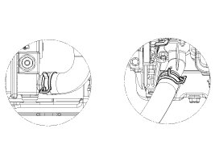
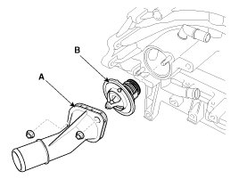
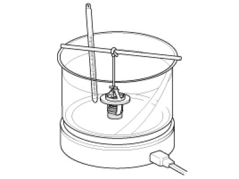

Thermostat: Service and Repair
Removal and Installation
NOTE:
Disassembly of the thermostat would have an adverse effect, causing a lowering of cooling efficiency. Do not remove the thermostat, even if the engine tends to overheat.
1. Drain engine coolant so its level is below thermostat.
2. Disconnect the radiator lower hose (A).

NOTE:
When installing radiator hoses, install as shown in illustrations.

3. Remove water inlet fitting (A) and thermostat (B).
Tightening torque :
18.6 - 23.5 N.m (1.9 - 2.4 kgf.m, 13.7 - 17.4 lb-ft)

4. Installation is reverse order of removal.
CAUTION:
- Install the thermostat with the jiggle valve upward.
- When assembling the thermostat, place the thermostat on the housing with a protrusion of thermostat matching with a groove of the housing and install the inlet fitting. Be careful the thermostat doesn't get out of the groove on the housing.
- Clean surface on the rubber packing contact surface.
5. Fill the engine coolant.
6. Start the engine and check for leaks.
7. Recheck the coolant level.
Inspection
1. Immerse the thermostat in water and gradually heat the water.

2. Check the valve opening temperature.
If the valve opening temperature is not as specified, replace the thermostat.
Valve opening temperature:
88 ± 1.5°C (190.4 ± 34.7°F)
Full opening temperature:100°C (212°F)
3. Check the valve lift.
If the valve lift is not as specified, replace the thermostat.
Valve lift :8 mm (0.3 in.) or more at 100°C (212°F)